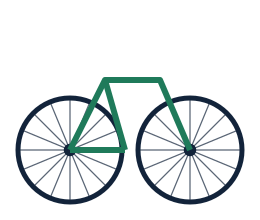

Cinco minutos que alargan la vida de tu bici
13/10/2026 – Una bicicleta bien cuidada no necesita grandes reparaciones. Casi siempre los problemas empiezan con una cadena seca, una llanta con poco aire o unos frenos que ya no muerden. Revisar estos tres puntos antes de salir toma menos tiempo que servirse un café.

Empieza por las llantas: aprieta con el pulgar y comprueba que no estén blandas. Luego gira la rueda y mira si el freno roza. Por último, pasa un dedo por la cadena; si hace ruido o se ve reseca, necesita lubricante. Aplica una gota por eslabón, deja que penetre y limpia el sobrante con un trapo para que no junte polvo.
En una ciudad como Lima, con humedad y garúa buena parte del año, la cadena y los cables se desgastan más rápido. Una limpieza ligera cada semana y una revisión completa en el taller cada seis meses mantienen todo en orden y evitan sorpresas en plena avenida.